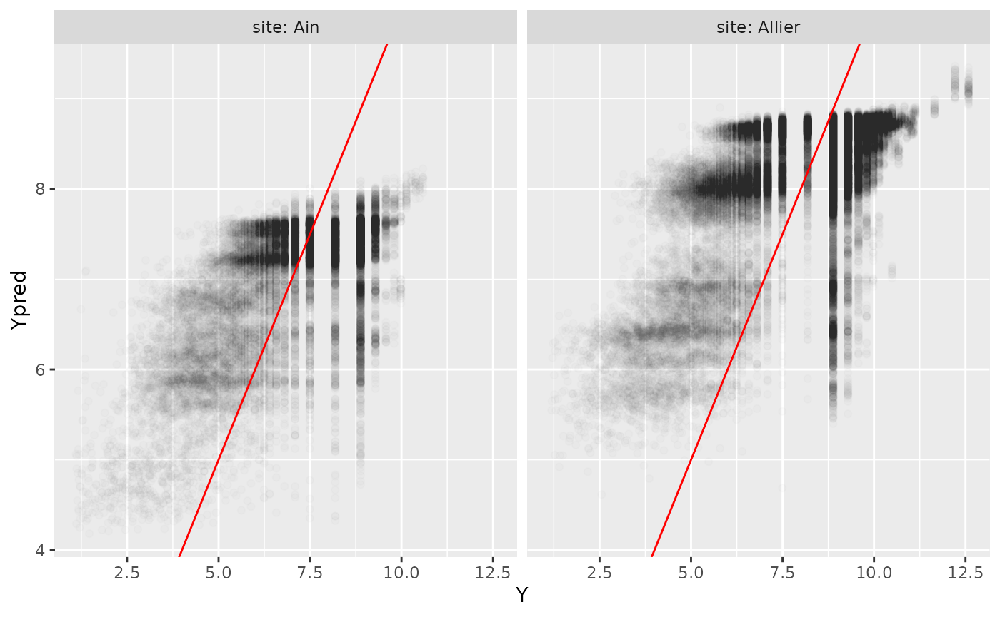

wood_Ain_and_Allier.Rmd
knitr::opts_chunk$set(warning=FALSE,message=FALSE)
library(woody)
library(tidyverse)
tib_sites=tibble::tibble(site=c("Ain","Allier"),
q1.5=c(840,460),
station=c("V2942010","K3400810")) %>%
mutate(path=paste0("../data-raw/wood_data_",site))
tib_sites## # A tibble: 2 × 4
## site q1.5 station path
## <chr> <dbl> <chr> <chr>
## 1 Ain 840 V2942010 ../data-raw/wood_data_Ain
## 2 Allier 460 K3400810 ../data-raw/wood_data_Allier
result_file="../data-raw/results/tib_W.RDS"
if(!file.exists(result_file)){
tib_W=tib_sites %>%
group_by(vars=site,q1.5,station,path) %>%
mutate(Wdata=purrr::map2(.x=path,.y=site,~import_Wdata(path=.x,site=.y)))
saveRDS(tib_W,result_file)
}
tib_W=readRDS(result_file)
tib_W## # A tibble: 2 × 6
## # Groups: vars, q1.5, station, path [2]
## site q1.5 station path vars Wdata
## <chr> <dbl> <chr> <chr> <chr> <list>
## 1 Ain 840 V2942010 ../data-raw/wood_data_Ain Ain <tibble [23,788 × 5…
## 2 Allier 460 K3400810 ../data-raw/wood_data_Allier Allier <tibble [63,072 × 5…Collect qtvar data from banquehydro, for the period covered by Wdata,
result_file="../data-raw/results/tib_WQ.RDS"
if(!file.exists(result_file)){
tib_WQ=tib_W %>%
mutate(Qdata=purrr::map(.x=Wdata,.y=station,~get_Qdata(Wdata=.x,station=.y)))
saveRDS(tib_WQ,result_file)
}
tib_WQ=readRDS(result_file)
result_file="../data-raw/results/tib_WQc.RDS"
if(!file.exists(result_file)){
tib_WQc=tib_WQ %>%
mutate(Qdata=purrr::map2(.x=Qdata,.y=q1.5,~complete_Qdata(qtvar=.x, qnorm=.y)))
saveRDS(tib_WQc,result_file)
}
tib_WQc=readRDS(result_file)Complete Wdat with discharge data (interpolating Qdat)
result_file="../data-raw/results/tib_WcQc.RDS"
if(!file.exists(result_file)){
tib_WcQc=tib_WQc %>%
mutate(Wdata=purrr::map2(.x=Wdata,.y=Qdata,~complete_Wdata_with_Qdata(Wdata=.x,Qdata=.y)))
saveRDS(tib_WcQc,result_file)
}
tib_WcQc=readRDS(result_file)Then calculate Wdata_wt, where 1 row= 1 waiting time between two wood occurrences.
result_file="../data-raw/tib_Wwt.RDS"
if(!file.exists(result_file)){
tib_Wwt=tib_WcQc %>%
mutate(Wdata=purrr::map(.x=Wdata,~Wdata_as_waiting_times(.x)))
saveRDS(tib_Wwt,result_file)
}
tib_Wwt=readRDS(result_file)
# Esummary=Wdat %>%
# select(sitevent,site,event,Date) %>%
# mutate(dawn = lubridate::ymd_hms(paste0(Date," 7:00:00")),
# dusk = lubridate::ymd_hms(paste0(Date-lubridate::days(1)," 21:00:00"))) %>%
# unique()
#
# Qdatc=bind_rows(Qdatc_Ain,
# Qdatc_Allier) %>%
# mutate(Date=lubridate::date(Time)) %>%
# left_join(Esummary %>%
# select(sitevent,site,event,Date),
# by=c("site","Date")) %>%
# select(site,event,sitevent,Time,Date,everything())
file_result="../data-raw/results/Wdata_pred.RDS"
if(!file.exists(file_result)){
Wdata_pred=predict_rf(newdata=Wwt,
obj_rf=myrf)
saveRDS(Wdata_pred,file_result)
}
Wdata_pred=readRDS(file_result)
R2=Wdata_pred %>%
calc_rf_R2()
R2## # A tibble: 1 × 3
## SCR SCT R2
## <dbl> <dbl> <dbl>
## 1 174136. 295393. 0.410
R2_bysite=Wdata_pred %>%
group_by(site) %>%
tidyr::nest() %>%
mutate(R2=purrr::map(data,calc_rf_R2)) %>%
select(site,R2) %>%
unnest(cols=c(R2))
R2_bysite## # A tibble: 2 × 4
## # Groups: site [2]
## site SCR SCT R2
## <chr> <dbl> <dbl> <dbl>
## 1 Ain 49811. 74919. 0.335
## 2 Allier 124325. 193864. 0.359
p=ggplot(Wdata_pred,aes(x=Y,y=Ypred))+
geom_point(alpha=0.01)+
geom_abline(intercept=0,slope=1, col="red")+
facet_grid(cols=vars(site),
labeller = labeller(.rows = label_both,
.cols = label_both))
plot(p)